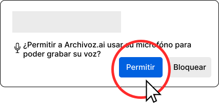

Esta es la grabadora de Archivoz. El objetivo es donar tu voz para construir una base de datos de voces argentinas con el propósito de desarrollar tecnología para nuestro país.

No impostar la voz
Leer de corrido
10
Grabando...
Audios enviados{{number_recordings or '0'}} / 20
00:00
Cuando estés listo, pulsa el botón para empezar a grabar
Procesando grabación...
¿Querés escuchar tu grabación?
Audios enviados{{number_recordings}} / 20
Error
Porque queremos hacer un análisis sonoro de las voces y poder vincular características acústicas con parámetros demográficos como la edad o la región.